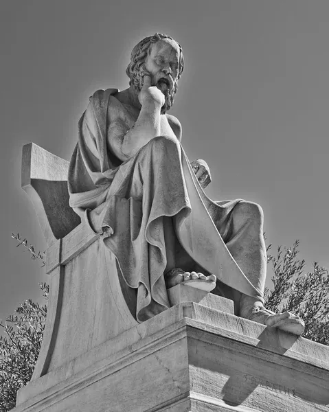

Socrates
Sócrates, también llamado Sócrates de Atenas, fue un filósofo griego del siglo V a.C. considerado el padre de la filosofía occidental y el fundador de la filosofía moral. Su principal método filosófico era la mayéutica, un diálogo en el que a través de preguntas conducía a la verdad. A pesar de su gran influencia, Sócrates no dejó escritos, y lo que sabemos de él proviene principalmente de sus discípulos, como Platón y Jenofonte . o hay duda de que Sócrates fue un filósofo singular. Algunos de sus discípulos nos lo presentan como un tipo raro, lo que en el griego de entonces se llamaba átopos, y narran episodios curiosos de su vida que subrayan su originalidad. Se contaba, por ejemplo, que durante una campaña militar permaneció de pie en el mismo lugar desde la aurora meditando sobre algo que le inquietaba, y así siguió de pie hasta la aurora del día siguiente. "Luego, tras hacer su plegaria al sol, dejó el lugar y se fue", refiere Platón en El banquete.
¿Cuál fue el pensamiento de Sócrates?
El pensamiento de Sócrates se caracteriza por su enfoque en la búsqueda de la verdad y la virtud, utilizando el método socrático, que se basa en el diálogo y el cuestionamiento constante. Para Sócrates, la sabiduría reside en el conocimiento de sí mismo y en la búsqueda del bien moral. Consideraba que la virtud es conocimiento y que, al conocer la verdad, se actúa correctamente.
>
Enfoque principal:
• Búsqueda de la verdad:
Sócrates se enfocaba en la búsqueda de la verdad a través del diálogo y el cuestionamiento de las ideas existentes.
• Método socrático:
Utilizaba un método de diálogo que consistía en hacer preguntas para llevar a los interlocutores a reflexionar sobre sus propias creencias y a descubrir la verdad.
• La virtud como conocimiento:
Sócrates creía que la virtud no era algo que se aprendía de memoria, sino que se adquiría a través del conocimiento de lo que es justo y bueno.
• Conócete a ti mismo:
Creía que el conocimiento de uno mismo era fundamental para vivir una vida virtuosa y feliz.
• La importancia del bien:
Sócrates consideraba que el objetivo principal de la vida era vivir según el bien y actuar moralmente.
• Crítica a la ignorancia:
Creía que la ignorancia era la causa de la maldad y que el conocimiento del bien conducía a la felicidad.
Objetivo:
El hombre, pues, estaba en el centro de la filosofía de Sócrates, igual que en la del sofista Protágoras, autor de la célebre máxima "el hombre es la medida de todas las cosas". Pero Sócrates adoptó un punto de vista opuesto al de los sofistas en las cuestiones éticas y políticas. Según Sócrates, igual que una técnica –como la del médico o el músico mencionados en Gorgias– requiere un conocimiento específico para el que no todo el mundo está capacitado, también los temas políticos y morales deben ser resueltos por especialistas en la materia . En consecuencia, consideraba que el gobierno debía ser ejercido por sabios expertos en lo relacionado con el bien, la justicia y las virtudes morales.
- “Consideraba que el gobierno debía ser ejercido por sabios expertos en lo relacionado con el bien, la justicia y las virtudes morales”
De ello se derivaba una dura crítica al sistema democrático vigente en la Atenas de su tiempo, que a sus ojos era una forma de gobierno injusta porque consistía en poner en manos de la mayoría ignorante las cuestiones más vitales y trascendentes que sólo los expertos podían resolver. Años después, Platón desarrolló esta teoría en su obra La República, donde justificaba el gobierno de los filósofos como alternativa al desgobierno de las ciudades de su tiempo y, en particular, al gobierno que se basa en las decisiones de la mayoría. Estos tres aspectos fundamentales: el puesto central del hombre en la visión del mundo, el método de investigación basado en el diálogo y el elogio del gobierno formado por expertos forman parte del "giro socrático", el cambio radical que Sócrates imprimió a la historia de la filosofía.
Copyright © 2025- Derechos Reservados - Proyecto